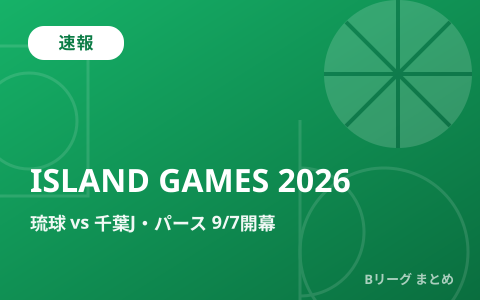

琉球「ISLAND GAMES 2026」9月7日開幕 千葉J・豪州パースと国際週間

沖縄を本拠地とする琉球ゴールデンキングスが、9月7日から沖縄サントリーアリーナで主催イベント「ISLAND GAMES 2026」を開催します。千葉ジェッツ、オーストラリアNBLの強豪パース・ワイルドキャッツを交えた3チーム総当たりの「INTERNATIONAL WEEK」に加え、9月15日には元エースのヴィック・ローが移籍加入した茨城ロボッツとも対戦。B.PREMIER開幕（9月22日）を目前に控えた各クラブの仕上がりを占う注目カードが続きます。
「INTERNATIONAL WEEK」日程・対戦カード
9月7日から10日にかけて、琉球・千葉J・パースの3チームによる総当たり戦「INTERNATIONAL WEEK」が沖縄サントリーアリーナで行われます。3試合とも19時35分ティップオフの予定です。
| 日程 | 対戦カード | 会場 |
|---|---|---|
| 9月7日（月）19:35 | 琉球ゴールデンキングス vs 千葉ジェッツ | 沖縄サントリーアリーナ |
| 9月8日（火）19:35 | 千葉ジェッツ vs パース・ワイルドキャッツ | 沖縄サントリーアリーナ |
| 9月10日（木）19:35 | 琉球ゴールデンキングス vs パース・ワイルドキャッツ | 沖縄サントリーアリーナ |
豪州の強豪パース・ワイルドキャッツとは
パース・ワイルドキャッツはオーストラリアの男子プロバスケットボールリーグ「NBL」に所属する名門クラブです。今回は2年ぶりとなる日本遠征で、昨シーズンの主力メンバーが多数残留し高い継続性を保っているのが強み。サイズを生かしたプレーと多彩な得点パターンを備えたチームとされ、B.PREMIER勢にとっては開幕前に世界基準の強度を測る貴重な機会になります。
9月15日は元エース対決 茨城ロボッツ×ヴィック・ロー
「INTERNATIONAL WEEK」とは別に、9月15日（火）には琉球ゴールデンキングスと茨城ロボッツの一戦も沖縄サントリーアリーナで組まれています。茨城には今オフ、琉球でエースとして活躍したヴィック・ローが加入しており、古巣との対戦がひとつの見どころです。同選手の移籍については8月の移籍まとめでも取り上げています。
B.PREMIER開幕へ向けて
新リーグ「B.PREMIER」2026-27シーズンは9月22日、アルバルク東京と琉球ゴールデンキングスの一戦で開幕予定です。ISLAND GAMESで国際強豪と対戦する琉球をはじめ、各クラブがこの時期の練習試合・親善試合を通じてコンディションを整えています。開幕日程の詳細はBプレミア開幕の記事でまとめています。
Q. ISLAND GAMESの結果はレギュラーシーズンの成績に関係する？
A. プレシーズンの親善試合であり、B.PREMIERの公式戦績には反映されません。開幕前の調整・強化を目的としたイベントです。
出典：バスケットボールキング「琉球がISLAND GAMESの開催を発表…9月に本拠地で千葉J、パース、茨城と激突」／バスケットカウント「琉球ゴールデンキングスが『ISLAND GAMES 2026』の開催を発表」／琉球ゴールデンキングス公式「パース・ワイルドキャッツ戦の見どころ」ほか
https://basketballking.jp/news/japan/20260717/624267.html
https://basket-count.com/article/detail/268496
https://goldenkings.jp/news/detail/id=26076